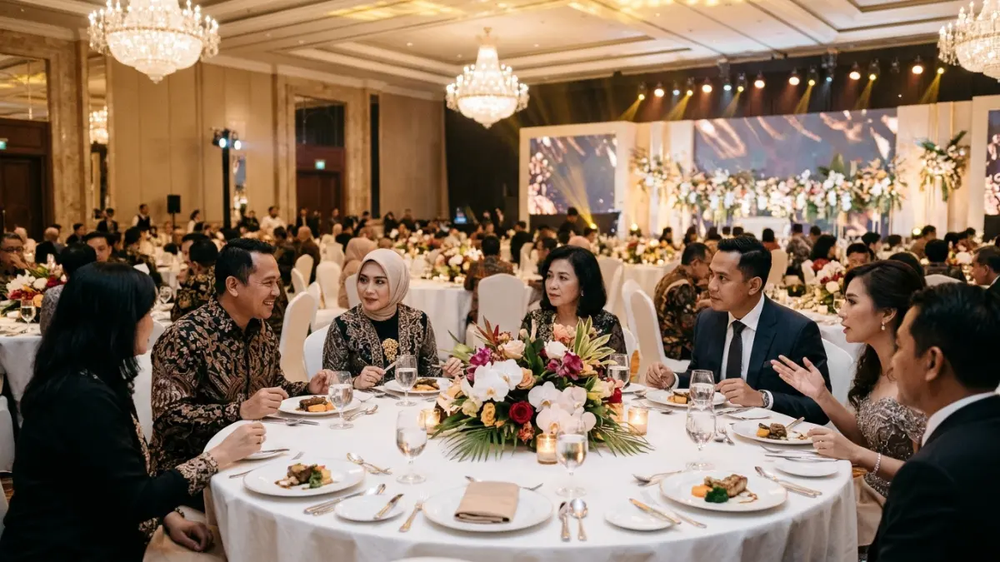

Gala dinner adalah acara makan malam formal berskala besar yang diselenggarakan untuk merayakan pencapaian, menjalin relasi bisnis, atau menutup rangkaian kegiatan penting suatu organisasi.
- Gala dinner adalah jamuan makan malam resmi dengan program acara, hiburan, dan aturan berpakaian.
- Tujuannya mencakup apresiasi, networking, penggalangan dana, dan penguatan citra organisasi.
- Pasar MICE global diperkirakan sekitar US$1,34 triliun pada 2026, dan gala dinner lazim menjadi penutup agenda bisnis.
- Keberhasilan acara bergantung pada tujuan jelas, anggaran realistis, rundown padat tetapi tidak terburu-buru, dan kenyamanan tamu.
DAFTAR ISI
- 1. Apa Pengertian Gala Dinner Secara Lengkap?
- 2. Seberapa Besar Industri MICE yang Menopang Gala Dinner pada 2026?
- 3. Apa Saja Tujuan dan Manfaat Gala Dinner?
- 4. Jenis Gala Dinner yang Umum Diselenggarakan
- 5. Apa Saja Unsur Utama dalam Gala Dinner?
- 6. Siapa yang Perlu Menyelenggarakan Gala Dinner dan Kapan Waktu yang Tepat?
- 7. Bagaimana Cara Merencanakan Gala Dinner dari Awal?
- 8. Bagaimana Aturan Berpakaian dan Etika Tamu dalam Gala Dinner?
- 9. Apa Perbedaan Gala Dinner dengan Acara Lain?
- 10. Kesalahan Umum dalam Menyelenggarakan Gala Dinner
- 11. Tips Agar Gala Dinner Berkesan dan Efektif
- 12. Kesimpulan
- 13. FAQ
Apa Pengertian Gala Dinner Secara Lengkap?
Gala dinner adalah jamuan makan malam resmi yang dirancang untuk perayaan atau pertemuan penting, lengkap dengan rangkaian hidangan, program acara, hiburan, dan aturan berpakaian tertentu.
Kata gala berasal dari bahasa Prancis dan Italia yang merujuk pada perayaan atau pesta besar. Dalam praktik modern, istilah ini dipakai untuk acara makan malam yang dikemas lebih istimewa daripada jamuan biasa.
Tamu biasanya duduk di meja yang sudah diatur, menikmati hidangan bertahap, lalu mengikuti program seperti sambutan, penghargaan, atau pertunjukan.
Gala dinner dapat diselenggarakan oleh perusahaan, asosiasi profesi, kampus, yayasan, maupun komunitas.
Lokasinya beragam, mulai dari ballroom hotel, gedung pertemuan, restoran privat, sampai area terbuka yang ditata khusus.
Nuansa formal menjadi ciri utama, tetapi tingkat kemewahan dapat disesuaikan dengan skala organisasi dan tujuan acara.
Seberapa Besar Industri MICE yang Menopang Gala Dinner pada 2026?
Pasar MICE global diperkirakan bernilai sekitar US$1,34 triliun pada 2026, sehingga gala dinner lazim menjadi penutup agenda pertemuan bisnis, konferensi, dan perjalanan insentif.
Menurut laporan Fortune Business Insights yang diperbarui pada Juli 2026, nilai pasar MICE global mencapai US$1.342,18 miliar pada 2026, naik dari US$1.226,07 miliar pada 2025.
Lembaga riset lain memberikan angka berbeda karena perbedaan definisi dan metode, sehingga angka tersebut sebaiknya dibaca sebagai gambaran skala industri.
Untuk Indonesia, IECA dan ASPERAPI memproyeksikan industri MICE nasional bernilai US$2,5 miliar sampai US$3,2 miliar pada 2026, sebagaimana disampaikan Kementerian Pariwisata dan dimuat Kontan pada 22 Oktober 2026.
Pada Juli 2026, Indonesia Business Event Mart memproyeksikan potensi transaksi bisnis sekitar Rp334 miliar dalam skenario optimistis, menurut laporan RRI tanggal 30 Juli 2026.
Angka-angka ini mencakup seluruh industri MICE, bukan gala dinner saja. Meski begitu, pertumbuhan sektor ini memperlihatkan bahwa kebutuhan akan acara jamuan resmi, terutama sebagai penutup konferensi dan perjalanan insentif, tetap relevan.
Apa Saja Tujuan dan Manfaat Gala Dinner?
Tujuan utama gala dinner adalah mempererat hubungan, memberi apresiasi, memperkuat citra organisasi, dan menciptakan momen perayaan yang berkesan bagi tamu undangan.
Dari sisi relasi, gala dinner memberi ruang bertemu yang lebih santai dibanding rapat formal. Mitra bisnis, klien, dan rekan kerja dapat berbincang tanpa tekanan agenda. Banyak kesepakatan kerja sama bermula dari percakapan informal semacam ini.
Dari sisi internal, acara ini menjadi bentuk penghargaan bagi karyawan, anggota, atau relawan yang telah berkontribusi. Pemberian penghargaan di depan banyak orang umumnya meningkatkan rasa dihargai dan kebersamaan.
Dari sisi citra, gala dinner yang tertata baik mencerminkan profesionalisme penyelenggara. Pada acara amal, gala dinner juga dapat menjadi sarana penggalangan dana karena suasana jamuan mendorong tamu untuk berpartisipasi dalam lelang atau donasi.
Manfaat lain yang sering muncul adalah dokumentasi acara yang dapat dipakai untuk bahan komunikasi organisasi.

Tamu undangan berbusana formal sedang menikmati hidangan dan networking dalam suasana jamuan makan malam resmi. (Ilustrasi)Jenis Gala Dinner yang Umum Diselenggarakan
Gala dinner umumnya dibedakan menjadi jamuan korporat, malam penghargaan, acara penggalangan dana amal, penutupan konferensi, dan perayaan ulang tahun organisasi atau institusi.
Gala dinner korporat biasanya digelar pada akhir tahun atau saat peluncuran produk besar. Fokusnya pada apresiasi karyawan dan penguatan hubungan dengan mitra.
Malam penghargaan menempatkan sesi pemberian trofi sebagai inti acara, sehingga alur panggung dibuat lebih dominan.
Gala dinner amal menitikberatkan pada penggalangan dana lewat lelang, donasi, atau penjualan meja.
Penutupan konferensi adalah jenis yang paling sering muncul dalam industri MICE, ketika peserta dari banyak daerah atau negara berkumpul sebelum kembali pulang.
Terakhir, perayaan ulang tahun organisasi mengemas perjalanan sejarah lembaga dalam suasana jamuan yang hangat.
Apa Saja Unsur Utama dalam Gala Dinner?
Unsur utama gala dinner meliputi tempat acara, tata hidangan, program panggung, hiburan, pengaturan tempat duduk, aturan berpakaian, dan dokumentasi yang dikelola oleh panitia.
Tempat acara menentukan kapasitas, suasana, dan kemudahan akses tamu. Tata hidangan biasanya berupa menu bertahap atau prasmanan premium yang disesuaikan dengan kebutuhan tamu, termasuk pilihan halal, vegetarian, atau bebas alergen.
Program panggung memuat sambutan, penghargaan, atau presentasi singkat, sementara hiburan mengisi jeda agar suasana tetap hidup.
Pengaturan tempat duduk penting agar tamu kunci, pembicara, dan mitra penting berada pada posisi yang tepat. Rangkaian ini disusun dalam rundown.
Pembahasan rinci mengenai susunan acara gala dinner beserta contoh rundown lengkap dapat dijadikan acuan praktis bagi panitia.
Siapa yang Perlu Menyelenggarakan Gala Dinner dan Kapan Waktu yang Tepat?
Gala dinner cocok untuk perusahaan, asosiasi profesi, lembaga pendidikan, dan komunitas yang ingin merayakan momen penting, biasanya pada akhir tahun, penutupan konferensi, atau peringatan pencapaian.
Organisasi yang memiliki banyak pemangku kepentingan, seperti mitra, anggota, atau donatur, biasanya paling terbantu oleh acara ini. Bagi organisasi kecil, gala dinner dapat dibuat lebih ringkas agar tetap realistis secara anggaran.
Waktu penyelenggaraan sebaiknya mempertimbangkan kalender bisnis dan libur nasional. Akhir kuartal, akhir tahun, atau hari terakhir konferensi sering dipilih karena tamu sudah berkumpul.
Panitia umumnya perlu mengunci tanggal dan tempat jauh hari sebelumnya, karena venue populer pada musim ramai cenderung cepat terisi.
Bagaimana Cara Merencanakan Gala Dinner dari Awal?
Perencanaan gala dinner dimulai dari menetapkan tujuan, jumlah tamu, anggaran, dan tanggal, lalu dilanjutkan dengan memilih tempat, katering, hiburan, serta menyusun rundown acara.
Langkah pertama adalah merumuskan tujuan dalam satu kalimat, misalnya apresiasi karyawan atau penutupan konferensi. Tujuan ini memandu semua keputusan berikutnya.
Langkah kedua adalah memperkirakan jumlah tamu dan menetapkan rentang anggaran. Panduan terperinci tentang cara menyusun anggaran gala dinner untuk perusahaan dan komunitas membantu panitia menghindari biaya tak terduga.
Setelah itu, panitia memilih venue, membandingkan penawaran katering, menentukan hiburan, dan menunjuk pembawa acara.
Terakhir, panitia membuat jadwal kerja mundur dari hari acara, lengkap dengan penanggung jawab setiap tugas serta gladi resik sebelum hari pelaksanaan.
Bagaimana Aturan Berpakaian dan Etika Tamu dalam Gala Dinner?
Aturan berpakaian gala dinner biasanya formal, seperti jas dan gaun malam, tetapi panitia dapat menetapkan tema atau dress code lain sesuai karakter acara.
Dress code umumnya tertera pada undangan agar tamu bisa mempersiapkan busana. Pilihan yang sering dipakai adalah black tie, semi formal, atau busana adat dan batik formal.
Pembahasan lengkap mengenai dress code gala dinner untuk pria dan wanita beserta contohnya membantu tamu maupun panitia menghindari kebingungan.
Soal etika, tamu diharapkan hadir tepat waktu, menempati kursi yang telah ditentukan, menghormati sesi sambutan, dan menjaga penggunaan ponsel selama program berlangsung. Konfirmasi kehadiran serta informasi kebutuhan khusus, seperti alergi makanan, perlu disampaikan lebih awal kepada panitia.
Apa Perbedaan Gala Dinner dengan Acara Lain?
Gala dinner berbeda dari makan malam biasa karena memiliki program resmi, aturan berpakaian, skala tamu lebih besar, dan tujuan perayaan atau penggalangan relasi yang jelas.
Dibandingkan makan malam bersama, gala dinner lebih terstruktur dan formal. Dibandingkan cocktail party, gala dinner menyajikan hidangan duduk dengan durasi lebih panjang, sedangkan cocktail party umumnya berdiri dengan hidangan ringan.
Dibandingkan farewell party atau acara perpisahan, gala dinner mencakup tujuan yang lebih luas dan tidak terbatas pada pelepasan seseorang.
Dibandingkan gathering santai, gala dinner mengutamakan kesan elegan dan ketertiban acara. Gathering di alam atau di area terbuka cenderung santai dan interaktif.
Kedua format dapat dipadukan, misalnya gathering pada siang hari yang ditutup gala dinner pada malam hari.
Kesalahan Umum dalam Menyelenggarakan Gala Dinner
Kesalahan umum penyelenggaraan gala dinner meliputi tujuan acara yang kabur, rundown terlalu padat, pengaturan tamu yang buruk, serta anggaran tanpa dana cadangan.
Tujuan yang tidak jelas membuat panitia sulit memilih konsep dan hiburan. Rundown yang terlalu padat membuat tamu lelah dan acara berlarut-larut.
Pengaturan tempat duduk yang asal-asalan dapat memicu ketidaknyamanan, terutama bagi tamu kehormatan.
Kesalahan lain adalah mengabaikan kebutuhan makanan khusus, kurangnya uji coba teknis untuk suara dan layar, serta tidak menyiapkan rencana cadangan bila terjadi hujan atau kendala teknis.
Banyak panitia juga lupa menetapkan satu orang penanggung jawab utama pada hari acara, sehingga koordinasi menjadi lambat.
Tips Agar Gala Dinner Berkesan dan Efektif
Gala dinner berkesan bila panitia menjaga tema tetap konsisten, durasi program ringkas, hidangan sesuai kebutuhan tamu, dan alur acara mudah diikuti sepanjang malam.
Pertama, tentukan tema yang selaras dengan identitas organisasi, lalu terapkan pada dekorasi, tata cahaya, dan hiburan.
Kedua, batasi sambutan agar tidak melebihi waktu yang disepakati.
Ketiga, pilih pembawa acara yang mampu menjaga ritme dan menghidupkan suasana.
Keempat, siapkan area registrasi yang efisien agar tamu tidak menumpuk di pintu masuk.
Kelima, lakukan gladi resik minimal sekali.
Keenam, kumpulkan masukan dari tamu setelah acara untuk bahan perbaikan.
Selain itu, pertimbangkan aspek keberlanjutan, misalnya mengurangi limbah makanan dan menggunakan dekorasi yang dapat dipakai ulang.
Kesimpulan
Gala dinner adalah jamuan makan malam formal bertujuan perayaan dan relasi, dan keberhasilannya bergantung pada tujuan jelas, perencanaan matang, anggaran realistis, serta pengalaman tamu.
Mulailah dengan menetapkan tujuan acara, jumlah tamu, dan anggaran. Susun rundown yang ringkas, tentukan dress code sejak undangan, dan siapkan dana cadangan.
Gunakan acuan dari artikel pendukung tentang rundown, dress code, dan anggaran agar setiap bagian acara dapat dipersiapkan dengan rapi.